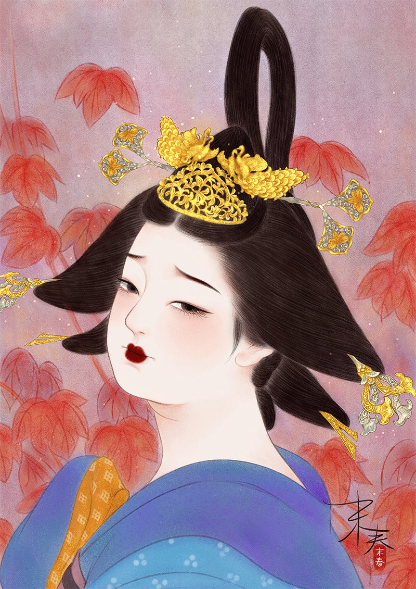
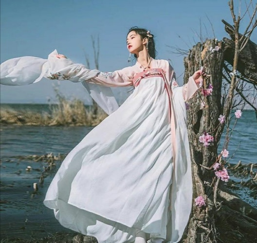
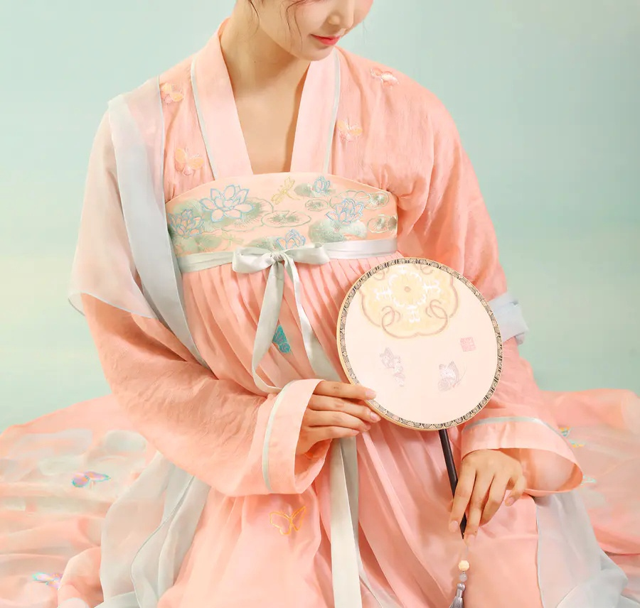
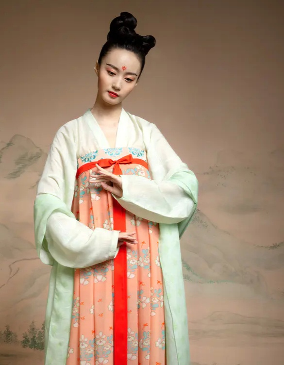
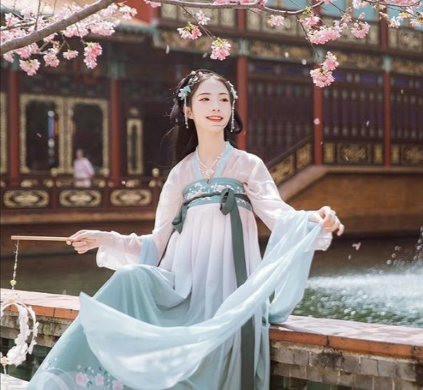

贵族女性服饰

唐代宫廷女性服饰以其众多的类型、考究的搭配、开放包容的独特风格，在中国古代服饰史上书写了灿烂夺目的篇章。它的一系列流行演变，充分反映了唐代的社会特征和审美倾向。 沈从文先生在美国纽约圣若望大学的讲演《从新文学转到历史文物》中，曾提到了认识唐代女服的一个关键：更多史前和中古近古的壁画出土，使我们不甚费力的就能分辨出初唐（武则天时代）、盛唐（杨贵妃时代）与晚唐（崔莺莺时代）妇女服饰基本上的不同。” 提沈从文的这个观点，主要是想说明古人穿衣也很少“从一而终”，也讲究潮流与时尚。
上衣：
圆领窄袖短襦
长袖紧口对襟薄衫
半臂（搭配上襦）
坦领窄袖衫
披帛：
半透明的丝质连袖披帛等。 披帛分两种：一种横幅有些宽， 而长方向有些短，大部分都是已婚女子才使用；另一种的长方向甚至有2m开外，大部分是还没有结婚的女子才使用的。披帛的两端分别缠绕于衣服的袖口处，唐诗日“金条脱”。
裙：

浅且纯的单色长裙
齐胸红绿色间彩襦裙

抹胸长裙
大袖长裙
按时期分类
初唐
唐代宫廷女性服饰在发展变化 中大致经历了三个阶段：初唐以窄袖短襦、长裙为主，简约朴素；盛唐时期，衣裙渐宽，风格自由开放，颜色艳丽；中晚唐宫廷女服的样式日趋宽大，重新回归到中原女服宽衣博带传统之中。而这一切也与唐代的兴衰不无关系。 唐初宫廷女装风格承袭南北朝、隋制，女性多着窄袖衫襦和长裙，相对保守。初唐衫襦多承隋制，紧身窄袖，衣领多为圆领或小交领，且色彩朴素，通常为浅且纯的单色。窄袖流行的原因，古今学者大都认为是受胡服的影响。至于裙，唐 宫廷贵族女性喜穿间色裙，“裙常用两色绫罗拼合，形成间道裥褶效果”，颜色往往以红绿、红白、红黄等为搭配，色彩亮丽。此时女性裙装的形制大多是窄而修身的，裙腰位置也极高，甚至束至胸上腋下，几近领口。初唐时还流行一种短袖衫，谓之半臂，形似现代的T恤。半臂又称“半袖”，是一种从上襦中发展演变出来的服装。一般衣袖齐肘，衣长与腰齐，对襟、并在胸前系结，也有无领套头式。半臂放在现代算是一种外搭，常常需要搭配上襦。因为半臂使人看起来较为干练，并且窄袖也便于活动，在唐朝前期宫中女官都着半臂。沈从文在 《中国古代服饰研究》一书中写到：“宫女一律着半臂（或半袖上襦），这种新衣在唐初有普遍性，开元、天宝时犹继续使用，此后便只是个别出现。”
盛唐

盛唐时，宫廷女性的服饰风格变得更加自由开放，衣裙有渐宽的趋势。在当时，坦领在宫廷女性中非常流行，很大程度上反映了盛唐时期的繁荣与开放。许多唐代的墓室壁画以及出 土文物都能证明坦领窄袖衫是盛唐时期颇为入时的一种服装。 坦领窄袖衫的形式与其他窄袖衫襦不同，主要在于它没有开襟，为坦胸贯头式，且有很华美的纹饰。坦领上襦可以充分地体现女子的形体美，通常与坦领半臂一同搭配穿着。值得一提的是，在盛唐时期嫔妃公主等贵族女性可以穿开胸衫，歌女舞女也被允许半裸胸以取悦君王，而普通老百姓家的女子是不许半裸胸的。盛唐时期的裙装较初唐更为宽大，多样，色彩艳丽。窄袖虽然仍是主流，较之初唐时已然加宽。 总之，至盛唐时，妇女的风姿渐以健美丰硕为尚。
晚唐
初唐和盛唐宫廷女性服饰受到胡服的影响较大，修身窄短，盛唐后期时宫廷女性服饰已逐渐变得宽大起来。到了中晚唐时期，由于安史之乱的影响，胡服受到人们很大的抵制，宫廷女性们开始追求大袖长裙的衣服样式，审美日趋传统。而且，她们的服饰色彩艳丽、风格华美，与当时的经济政治情况不符。唐代诗人元稹在《叙诗寄乐天书》中专门和好友白居易提起这种现象：“近世妇人……衣服修广之度及匹配色泽，犹剧怪诞。”那时的宫廷贵族女性，不再穿着受胡服影响的窄袖窄裙，并且似乎是想借助服饰的怪诞绚丽来宣泄自己内心对于唐朝走向衰败的不甘与难过。
宫廷女性服饰特点
1、兼收并蓄

唐代是中国封建社会的鼎盛时期，因当时统治者采取开放包容的对外态度，南北文化、东西文化在唐代得到了充分的交流融合。唐朝宫廷女服充分吸收了各种不同文化的积极滋养， 形成了兼收并蓄的风格特点。最能体现这一点的就是初唐和盛唐时期女着胡服的盛行。
唐代的胡服，实际上包括西域地区的少数民族服饰和印度、波斯等外国服饰。唐朝宫廷女性最常见的胡服装扮便是头戴胡帽、上着翻领或圆领小袖长袍，下着条纹小口裤，腰间系有革带，脚穿软锦透空靴。在武则天时代，穿这样的胡服便已成为社会潮流。到了开元、天宝年间，宫廷女性喜穿胡服的现象更甚，外出骑马游玩时皆戴胡帽、穿胡服，还会搭配相应的妆容。此外，初唐与盛唐时期女性传统服饰襦裙服多为窄袖短襦，下裙较为贴身，也是受到胡服特色的影响。
2、开放大气
唐代宫廷女性服饰的又一大特点就是开放大气，这也与唐朝时文化的高度发展不无关系。这一特点具体表现为女着男装以及坦领与大袖衫的出现。女着男装违背了封建社会的伦理道德，在其他朝代会被看作不守妇道的表现。而在唐朝，女着男装却一度成为时尚。
唐代女性服饰，尤其是盛唐时期，允许一定程度的裸露，坦领衫襦在当时十分流行。在永泰公主墓壁画中，女子衣领大都开的很低，窄袖、肩搭披帛，这是窄袖坦领衫的形式。坦领套头衫的主要特点在于它的衣领较低、袒露半个胸部，充分展现唐代女性的曲线美。而轻薄的大袖衫、半隐半现的肌肤，充分体现女性的形体美，也是女性自由开放的一大例证。画家周 昉所作的《簪花仕女图》中的那位唐侍女所穿的就是大袖纱罗衫，长裙束至胸上，透明的纱罗内不穿内衣，胸部以上及肩部隐约暴露，大袖长可及地。这种袒胸露背的服饰在中国封建社会是十分罕见的，表现了唐代女性对自由的向往，也是唐代开放国风的体现和对女性社会地位的认可。
3、奢侈华丽
唐代宫廷女装除了建朝初期较为简约朴素，其他时期都表现出奢侈华丽的特点。唐代宫廷女性十分追求服饰的华丽和新奇多变，而裙又在整体服饰中占重要的地位，因此，下文以裙为例探讨唐宫廷女装的奢侈华丽。
因安乐公主而风靡一时的百鸟裙可谓是唐宫廷女装奢侈华丽的一大代表。百鸟裙是将多种鸟类的羽毛捻成线，同丝一起织成面料而制成的裙子。其色泽艳丽、变幻无常，正看为一色，反看又是一色；日光下为一色，阴影中又是一色，且能呈现百鸟形态，可谓巧匠绝艺。当安乐公主命宫女制成百鸟裙后，宫廷贵族女子纷纷效仿，以至于山里中的很多奇禽异兽数量锐减。另一种能较明显体现唐宫廷女装精美华丽的裙装是散幅裙，它是用多幅纺绢制作而成，但是每幅纺绢之间不缝合在一起。普通的散幅裙要用到5幅丝帛缝制，也有用6幅、7幅、8 幅，甚至用12幅的，使用织料极为奢华铺张。这些都能体现唐代宫廷女性服饰奢侈华丽的特点，也从侧面反映出唐朝时经济的繁荣。